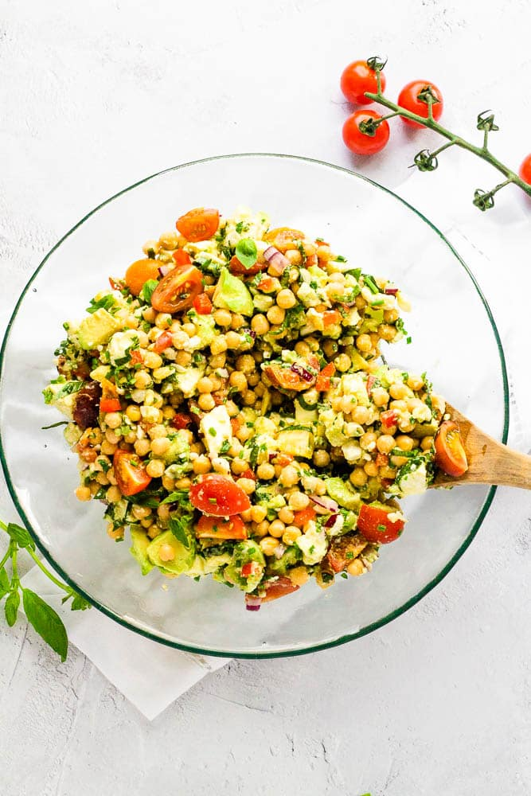

Chickpea salad recipe

Description
A filling chickpea salad full of delicious ingredients! Bright cherry
tomatoes, creamy avocado and mozzarella, tangy feta and fresh herbs.
You'll love the simple flavors and contrasting textures of this quick
and easy salad.
Ingridients
- chickpea (2 cans)
- cherry tomatoes - quartered (250 g)
- mozzarela - chopped (250 g)
- feta cheese - crumbled (75 g)
- red bell paper - chopped (1/2)
- red onion - finely minced (1/4)
- avocados - chopped (2)
- extra virgin olive oil (2 Tbsp)
- lemon juice (1)
- chives - finely chopped (1 bunch)
- basil leaves - finely chopped (1 bunch)
Preparation:
- Add the drained chickpeas, tomatoes, avocados, pepper, onion,
mozzarela, feta, and cherry tomatoes to a salad bowl.
- Add the olive oil, herbs, the juice of 1 lemon and salt and
pepper to taste. Toss until just combined.